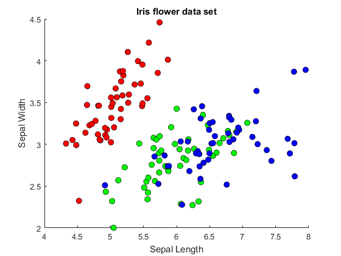
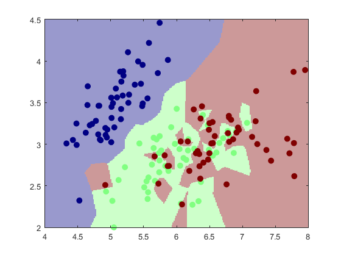
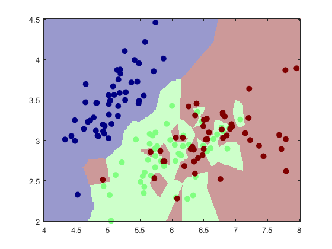
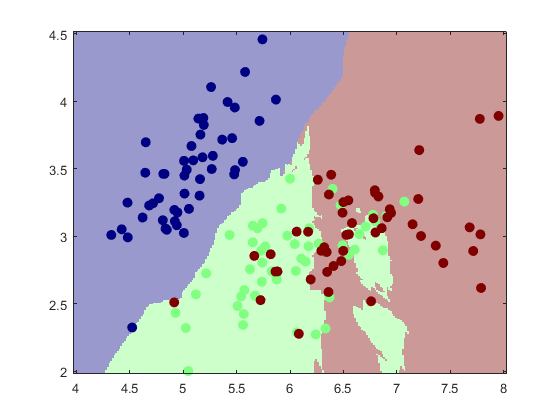
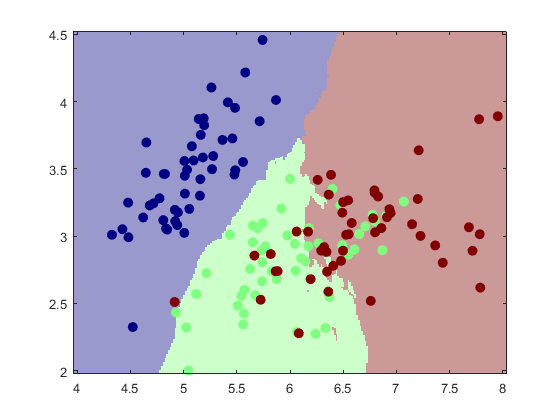
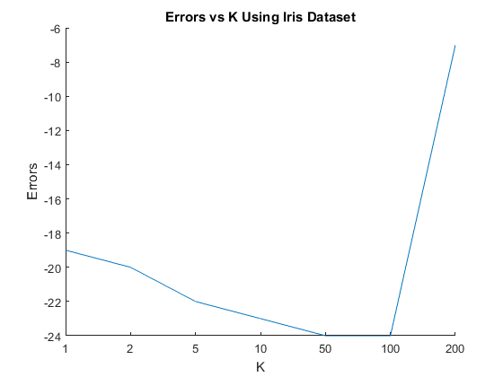

4. Nearest Neighbor Classifier
Contents
Loading Data
iris = load('iris.txt');
pi = randperm(size(iris, 1));
Y = iris(pi, 5);
X = iris(pi, 1:2);
m = length(Y);
a) Plotting Data
figure('name', 'Iris flower data set')
title('Iris flower data set')
xlabel('Sepal Length')
ylabel('Sepal Width')
hold on
plot(X(Y==0,1), X(Y==0,2), 'ko', 'markersize',7, 'markerfacecolor', 'red');
plot(X(Y==1,1), X(Y==1,2), 'ko', 'markersize',7, 'markerfacecolor', 'green');
plot(X(Y==2,1), X(Y==2,2), 'ko', 'markersize',7, 'markerfacecolor', 'blue');
hold off

b) Nearest Neighbor Predictor
nnlearner = knnClassify(1, X, Y);
class2DPlot(nnlearner, X, Y);

c) Various Values of K
ks = [1, 3, 10, 30];
for i=1:length(ks)
learner = knnClassify(ks(i), X, Y);
class2DPlot(learner, X, Y);
end


 
d) 80/20 Split
split = 0.8;
train_size = floor(split*m);
Xtrain = X(1:train_size,:);
Ytrain = Y(1:train_size,:);
Xtest = X(train_size+1:end,:);
Ytest = Y(train_size+1:end,:);
ks = [1, 2, 5, 10, 50, 100, 200];
errors = [];
for i=1:length(ks);
learner = knnClassify(ks(i), Xtrain, Ytrain);
Yhat = predict(learner, Xtest);
errors = [errors, -sum(Yhat == Ytest)];
end
figure('name', 'Errors vs K');
hold on
title('Errors vs K Using Iris Dataset');
xlabel('K');
ylabel('Errors');
plot(errors);
xticklabels(ks)
hold off
